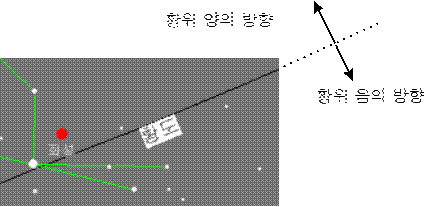

이제는 별바라기 성도를 실행시켰을 때 보여지는 빼곡한 점, 선, 글자들이 무엇이며 어떤 역할을 하는지에 관해 알아보기로 하자.
별바라기에서 표시되는 대상은 아래와 같으며 각 대상에 대하여 플래그를 갖고 있어, 성도에서 보임/감춤을 조절할 수 있다.
각 플래그의 설정은 [보기] 메뉴 아래에 있는 메뉴에서 설정할 수 있다. 많이 사용되는 플래그는 도구바에 두어 플래그의 설정을 쉽게 조절할 수 있다.
이름은 해당 대상이 표시될 때만 나타난다. 즉 '태양계 이름'은 태양계 대상이 표시될 때에만 나타난다.
별
SAO 자료: 8등급까지의 별 45,269개는 SAO(Smithsonian Astrophysical Observatory) 자료를 보여준다.
본래 SAO 자료는 약 10등급까지의 별 258,996개의 자료를 가지고 있으며, 이중에서 완성도가 높은 8등급까지의 별을 보여준다.
GSC 자료: GSC(Guide Star Catalogue)는 허블 우주 망원경의 가이드 별을 찾기 위해 만들어진 것으로 약 16등급까지의 별 1,900만개의 자료를 가지고 있다.
별바라기에서는 완성도가 떨어지는 밝은 별의 자료를 제외하고, 8등급보다 어두운 별을 보여준다.
기타 천체
NGC/IC 대상: 모든 NGC/IC를 보여준다.
태양계 대상: 태양, 달, 행성, 혜성, 소행성, 인공위성이 보여진다. 혜성, 소행성, 인공위성의 경우 궤도요소를 보관하는 자료 파일이 있으며,
파일에 보관된 모든 혜성, 소행성, 인공위성을 볼 수 있다. 보여지는 혜성, 소행성, 인공위성의 개수에 대한 제한은 없다.
기타: NGC/IC는 아니지만 메시에 대상에 포함되는 세 개의 대상 M24, M40, M45가 있다.
선
별자리 경계선: 예일 대학에서 가지고 있는 자료를 바탕으로 한다.
별자리 모양선: 별과 별을 이어주는 선으로 '재미있는 별자리 여행'을 중심으로 작성되었다.
적경/적위선: 성도의 시야에 따라 적절한 개수의 적경/적위선이 표시된다. 또한 [선택사항][성도보기] 메뉴에서 적경/적위선의 간격을 사용자가 지정하여 볼 수도 있다.
황도: 천구상에서 태양이 지나는 길인 황도를 보여주며 황도 아래쪽에 글자를 나타낸다. 즉 글자가 있는 쪽이 황위 음의 방향이다.

황도
은하의 적도: 은하의 적도는 1950년 분점을 기준으로 정의되어 있다 (Astronomical Algorithms). 본 프로그램에서는 이것을 2000년 분점으로 바꾸어서 보여준다.
은하의 적도 아래쪽에 글자를 나타낸다. 즉 글자가 있는 쪽이 은위 음의 방향이다.
은하수: 은하수는 두 단계의 밝기를 가지고 있다. 밝은 청색과 엷은 청색으로 구분한다. 은하수 자료는 Sky Atlas 2000을 참조하여 만들어졌다.
지평선: 현재 관측 장소와 관측 시간을 기준으로 하여 지평선을 보여준다. 동, 서, 남, 북 네 개의 방위를 나타내며, 글자가 있는 쪽이 지평선 아래를 나타낸다.
별자리 그림: 별자리 또는 별 이름에 맞는 그림을 보여준다. 별자리를 이해하는데 많은 도움이 될 것이다.
궤적
궤적: 태양계 대상(태양, 달, 행성, 혜성, 소행성, 인공위성)에 대하여 특정기간 동안의 궤적을 그려준다.
궤적의 계산 단위는 소수를 사용하여 사용자가 정할 수 있으며, 인공위성의 경우 '분'을, 나머지 대상은 '일(Day)'을 단위로 한다.
자세한 내용은 궤적 그리기를 참조하시오.
글자
별자리 이름: 88개, 뱀자리의 경우 뱀(머리), 뱀(꼬리)로 나누어 보여준다. (부록 가. 별자리 이름 참조)
별 이름: Sky Catalogue 2000에 정의된 이름 중 우리에게 널리 알려진 것만을 보여준다. (부록 다. 별 이름 참조)
별 그리스 문자: 별의 바이어(Bayer) 명칭을 나타낸다.
NGC/IC 번호: 메시에 대상은 'M'을, IC 대상은 'I'를 번호 앞에 붙이며, NGC 대상은 번호를 그대로 사용한다.
NGC/IC 대상이면서 메시에 대상은 메시에 번호를 보여준다. NGC/IC 번호를 확인하고자 할 때는 오른쪽 마우스 버튼을 눌러 확인한다.
NGC2000 이름: NGC 2000에 정의된 이름 중 우리에게 널리 알려진 것만을 보여준다. (부록 나. NGC/IC 이름 참조)
궤적의 날짜: 궤적의 표시된 점에 월/일을 표시한다. 궤적의 날짜는 마우스로 클릭하여 드래그(마우스를 누른 상태로 마우스를 움직임)함으로써 위치를 옮길 수 있다.
궤적의 날짜를 옮겼을 때 바뀐 위치가 곧바로 성도에 반영되지 않으면 [도구모음][다시 그리기] 메뉴를 선택하여 성도를 다시 그려주면 된다.